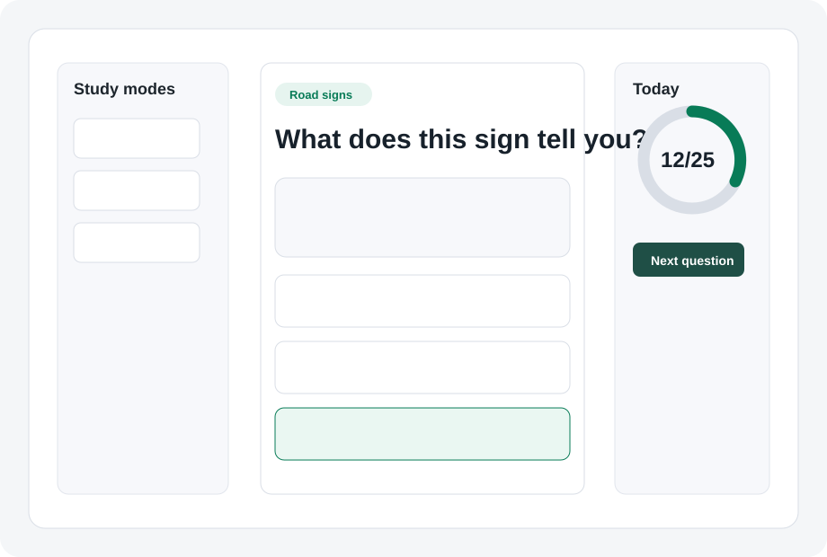
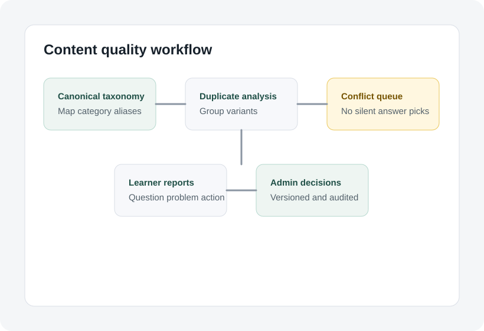

Try the real study flow
15 questions show the answer and feedback experience before you choose a plan.
Independent Irish Category B practice
Move from a free 15-question preview to focused rules, road signs, weak-area review, and timed mocks. One calm study path, without official-status or pass-guarantee claims.
Independent practice tool. Not affiliated with RSA or Prometric.

A clearer next step
Irish Theory Test Coach turns answers, missed questions, flags, signs, and mock results into a practical review loop. It is an independent learning product, not a testing or booking service.
15 questions show the answer and feedback experience before you choose a plan.
Missed and flagged questions become the next review round instead of disappearing behind one score.
40-question, 45-minute practice keeps the timer, answer, and review controls in view.
Content lint, conflicts, version history, and learner reports feed a visible editorial workflow.
How it works

Weak-area coaching
Answer history, missed questions, and flags shape the next session. Feedback explains why the supplied answer fits the rule or sign context.
Mock exam practice
Mock mode keeps question selection and scoring server-side, then sends missed areas back into review instead of chasing score after score.
Road signs
Image-backed drills help you name the sign or marking, notice its shape and colour, and connect it to the required or safest action.
Transparent pricing
The main learner plan is EUR 4.99 for 90-day access. Launch offer and instructor packs are shown when enabled.
Free preview
Full Study Pass
90-day access. One-time access to the full practice path. Repeat purchases extend access.
Refunds, cancellation, terms, privacy, and support are visible before checkout.
Launch offer
Shown only when enabled. No fake scarcity or outcome-promise wording.
Check availabilityInstructor packs
Ten-code and twenty-five-code packs for instructors or learner groups.
Instructor infoContent review methodology
The project tracks canonical categories, duplicate groups, answer conflicts, lint findings, learner reports, and admin decisions. Passing structure checks does not automatically mean factual verification.
No. Independent practice tool. Not affiliated with RSA or Prometric.
No. It is a practice and review tool, not a guarantee of any test outcome.
The free preview includes 15 questions and sample feedback.
Support and refund information is visible from the footer, pricing page, and support hub.
Ready when you are
Independent practice tool. Not affiliated with RSA or Prometric. Unlock for EUR 4.99 for the current learner plan.